Slides available at:
slides.mobiusconsortium.org/blake/evergreen_staff_sso
Presentation recording:
Here
Created by Blake Graham-Henderson / blake@mobiusconsortium.org
Press ESC to browse slides
Search for patrons
(slides continue downwards)
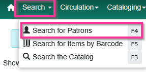
Check the various staff permission groups
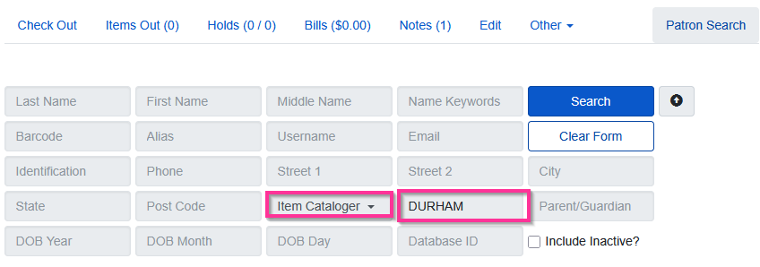
We don't recommend searching by name because:
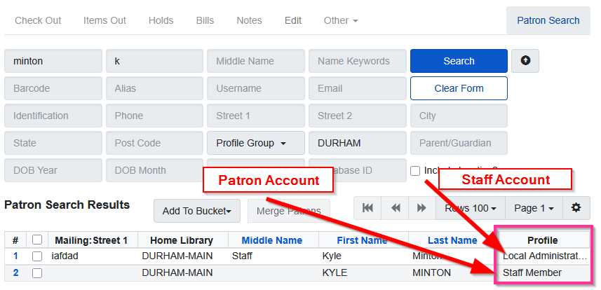
(slides continue downwards)
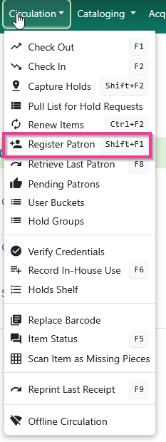
Fill out all of the fields
The username is automatically populated after you enter the barcode
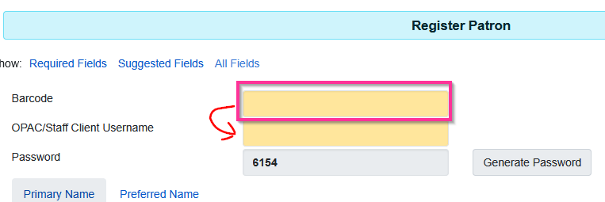
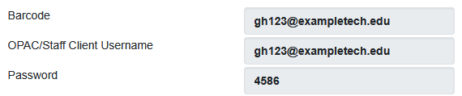
Passwords for staff accounts need higher security
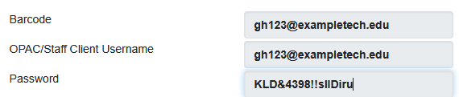
Copy and paste that into Notepad for sharing later
Be sure and choose the primary branch
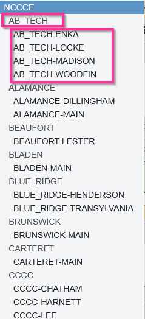
The top section is patron
The bottom section is staff
Don't be confused by "Staff Member"
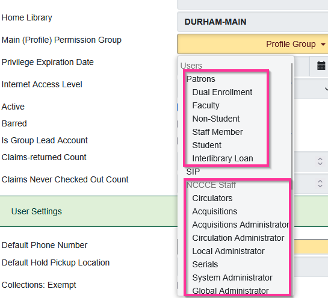
This person probably has a patron account
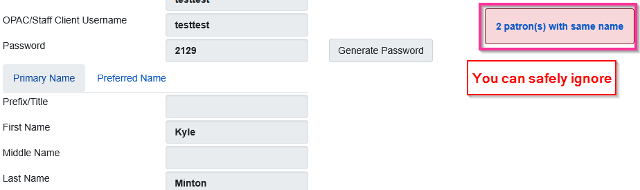
Find the staff account
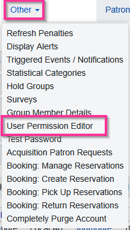
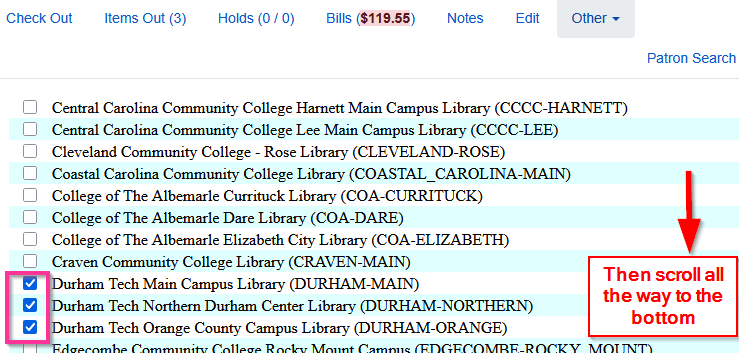
Then scroll all the way to the bottom
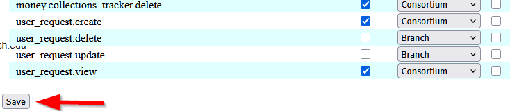
(slides continue downwards)
Reasons you need to know your Evergreen native password
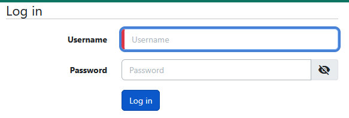
This allows Evergreen to understand "where" you are in the consortium
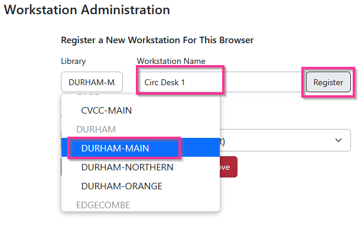
Click "Use Now"
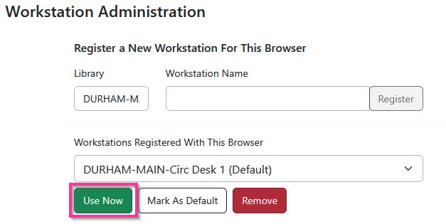
If you have hybrid enabled you can see both options
Goal is to disable hybrid, SSO only
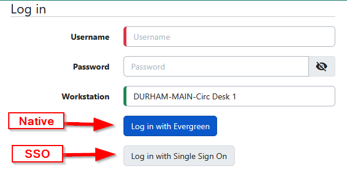
This is what we want
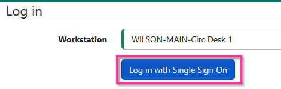
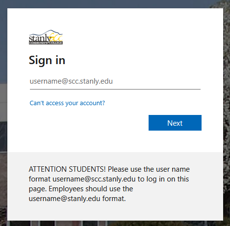
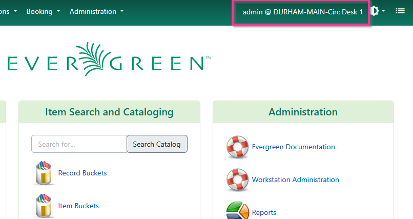
Slides available at:
slides.mobiusconsortium.org/blake/evergreen_staff_sso